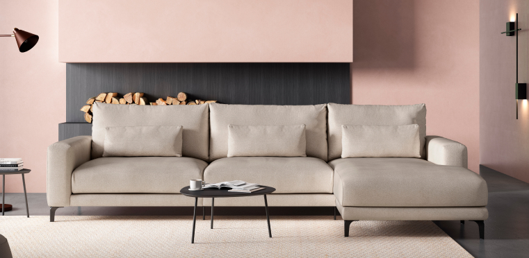

Sofás
De 2 a 4 plazas, chaise longue, rinconeros, sofás cama y butacas. Colecciones Velvet, Sogno, Milano, Amato, Tonga y más.
Ver sofás
Sofás, dormitorios, salones y mucho más, 100% personalizables. Diseñados en Barcelona, fabricados en España. Asesoramiento gratuito con interioristas en tu tienda Kibuc de Vilanova i la Geltrú.

Kibuc nació en 1986 con una idea clara: hacer accesible el diseño de calidad. Hoy, con más de 50 tiendas en España y diseño propio creado en Barcelona, cada pieza combina estética, funcionalidad y fabricación de proximidad.
En nuestra tienda de Vilanova i la Geltrú encontrarás colecciones completas para el salón, el dormitorio, el espacio juvenil y mucho más. Todo 100% personalizable en medidas, acabados y colores.
Muebles de diseño propio para cada rincón de tu casa. Personaliza cada pieza: medidas, materiales, colores y acabados a tu gusto.
De 2 a 4 plazas, chaise longue, rinconeros, sofás cama y butacas. Colecciones Velvet, Sogno, Milano, Amato, Tonga y más.
Ver sofásComedores completos, muebles de TV, mesas de centro y de comedor, bufets, librerías y estanterías.
Ver salónDormitorios completos, camas, mesitas, cabeceros, cómodas, sinfoniers. Colecciones Asai, Albor, Yume, Dreams y más.
Ver dormitoriosHabitaciones juveniles completas, camas, escritorios, armarios y estanterías. Colecciones Space, Chroma y Smart.
Ver juvenilColchones, bases, somieres, canapés y packs de descanso. Prueba de 100 noches sin compromiso.
Ver descansoArmarios de dormitorio y juvenil, a medida y modulares, con interiores personalizables.
Ver armariosHacer accesible el diseño de calidad fue nuestra idea fundacional. Diseñamos en Barcelona, fabricamos en España y personalizamos al detalle.
Desde la primera visita hasta la instalación final, te acompañamos en cada paso para que amueblar tu hogar sea una experiencia sencilla y satisfactoria.
Visítanos en tienda o agenda una cita con nuestro equipo de interioristas. Estudiamos tu espacio y tus necesidades sin compromiso.
Elige medidas, materiales, colores y acabados. Con proyecto 3D, verás cómo quedará tu hogar antes de decidir.
Transporte y montaje profesional gratuito en tu domicilio. Todo queda perfectamente instalado en su lugar.

Cada colección de Kibuc nace del equipo de diseño en Barcelona, inspirada en el estilo mediterráneo: luminosidad, materiales nobles y líneas limpias. Colaboramos con proveedores de Cataluña, País Vasco, Murcia y la Comunidad Valenciana para una fabricación de proximidad.
Todos los muebles son modulares y adaptables a las medidas de tu hogar. Nada de tallas únicas: cada pieza se ajusta a tu espacio.
Sí. Todos los muebles son 100% personalizables: medidas, acabados, colores y materiales. Nuestros interioristas te asesoran en tienda de forma gratuita para adaptar cada pieza a tu hogar.
Kibuc ofrece transporte y montaje gratuitos en tu domicilio. Nos encargamos de que cada mueble quede perfectamente instalado en su lugar.
Puedes visitar la tienda sin cita previa en horario de apertura. Si prefieres una sesión de asesoramiento personalizado con un interiorista, te recomendamos agendar cita para que te dediquemos todo el tiempo que necesites.
Estamos en la Ronda d'Europa, 48, 08800 Vilanova i la Geltrú (Barcelona). Fácil acceso y aparcamiento en la zona.
Sí. Disponemos de financiación flexible a 12 meses sin intereses con Cetelem, para que amueblar tu hogar sea más cómodo.
Kibuc diseña en Barcelona y fabrica con proveedores nacionales en Cataluña, País Vasco, Murcia y la Comunidad Valenciana, además de colaboraciones con Italia y Portugal.
En Ronda d'Europa, 48, Vilanova i la Geltrú. Ven sin compromiso a ver las colecciones, tocar los materiales y recibir asesoramiento gratuito.